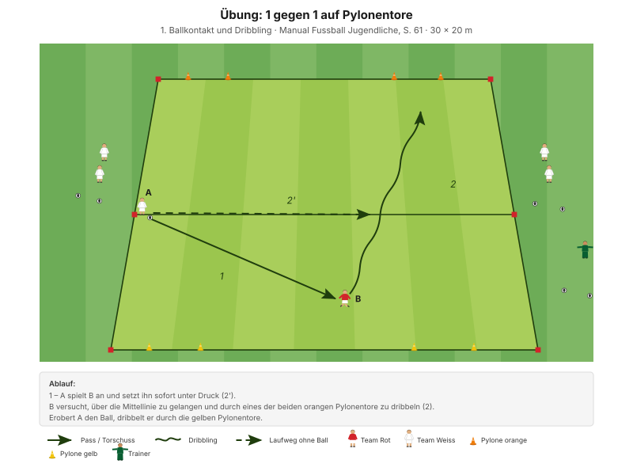

Das Duell Mann gegen Mann. Nicht grätschen, nicht hinterherlaufen – sondern seitlich stehen, den Gegner steuern und im richtigen Moment den Ball vom Gegner trennen.
"Defensive Zweikämpfe mutig und erfolgreich bestreiten" Erscheinungsform D2, Manual Fussball Jugendliche, S. 69
Die zwei Coachingsätze des Abends stehen im Lernbaustein: Tackeln in seitlicher Position, auf dem Vorderfuss und das Duell mit dem Körper führen. Mehr braucht es nicht – alles andere folgt daraus.
| Zeit | Min | Teil | Inhalt |
|---|---|---|---|
| 0–4 | 4 | Besammlung | Thema ansagen, Gruppen einteilen |
| 4–16 | 12 | E1 | Ballführen und Tore durchdribbeln · Big 4 zwischen den Wiederholungen |
| 16–22 | 6 | E2 | Bälle jagen |
| 22–30 | 8 | E3 | Sprint und Duell (Explosivität) |
| 30–45 | 15 | H1 | 1 gegen 1 auf Pylonentore |
| 45–48 | 3 | Pause | Trinken, Umbau |
| 48–70 | 22 | H2 | 1 gegen 1 plus 1 Torhüter |
| 70–82 | 12 | Abschluss | Freies Spiel 5 gegen 5 plus 2 Torhüter |
| 82–90 | 8 | Ausklang | Cool-down, zwei Entwicklungsfragen, Verabschiedung |
| Total | 90 |
Einstieg 26 · Hauptteil 37 · Abschluss 20 Min. – nach dem Trainingsschema des Manuals (S. 43).
Nur einmal umbauen: Die Pylonentore des Einstiegs bleiben für H1 stehen. In der Pause kommt das Tor mit Torhüter für H2 dazu.
Eigene Skizze · Platzaufteilung
Nur einmal aufbauen – das Einstiegsfeld liegt im späteren Spielfeld.
12 Minuten · 32 × 24 m · alle 12 Spieler
Eigene Skizze · Ballführen und Tore durchdribbeln
3 Wiederholungen à 1'30''–2' – zwischen den Wiederholungen je zwei Präventionsübungen.
"Tackeln in seitlicher Position (auf Vorderfuss) – Duell mit dem Körper führen" SFV-Lernbaustein "Einstieg TA: 1 gegen 1 defensiv", Phase 1
Warum das Tor 5 Meter breit ist: Der Verteidiger kann es nicht einfach zustellen. Er muss den Angreifer auf eine Seite lenken und dort das Duell suchen – genau wie im Spiel.
Je zwei Übungen zwischen den Wiederholungen, 25 Sekunden pro Übung:
| Bereich | Übung | Worauf achten |
|---|---|---|
| Fussgelenk | Einbeinsprünge seitlich | Bei der Landung knickt das Knie nicht ein, Oberkörper leicht nach vorne. |
| Knie | Miniband Side Steps | Miniband immer unter Spannung halten. |
| Hüfte | Mobilität in tiefer Position | Die Fersen bleiben in Kontakt mit dem Boden, Blick nach vorne. |
| Hamstrings | Standwaage mit Partner | Keine Rotation bei den Schlägen auf den Ball zulassen. |
"Arbeit mit Zeitvorgaben – nicht mit Anzahl Wiederholungen." Prinzip Körperstabilität, Manual Fussball Jugendliche, S. 75
Zwei Punkte pro Übung nennen, nicht mehr. Qualität vor Tempo.
6 Minuten · gleiches Feld · 3 Wiederholungen à 1'30''–2'
"Duelle suchen und mit dem Körper führen – Tackling (Gegner vom Ball trennen)" SFV-Lernbaustein "Einstieg TA: 1 gegen 1 defensiv", Phase 2
Duelle suchen ist das Stichwort. Wer wartet, bis der Ball zu ihm kommt, erobert nichts. Der Wettkampf sorgt dafür, dass das jeder von selbst merkt.
8 Minuten · 2 Bahnen · Paare bilden
| Parameter | Vorgabe |
|---|---|
| Distanz | 15–30 m |
| Wiederholungen | 3 |
| Pause zwischen Wiederholungen | 1/15 (Belastung × 15) |
| Serien | 3 |
| Pause zwischen Serien | 1'30''–2' |
"Erholungszeit: 10- bis 20-fache Dauer der Belastungszeit, abhängig von der Laufdistanz. Vollständig erholen zwischen den Wiederholungen." Prinzipien Explosivität, Manual Fussball Jugendliche, S. 72
15 Minuten · mehrere Felder parallel · alle 12 Spieler
Manual-Vorlage · Diagramm 13 "1 gegen 1 auf Pylonentore" (S. 61)

Im Manual steht die Form unter Dribbling – aus Sicht des Verteidigers ist sie eine reine Zweikampfform.
Zwei Tore heissen zwei Optionen für den Angreifer. Der Verteidiger kann sie nicht beide zustellen – er muss eine Seite anbieten und dort das Duell führen. Genau das nennt das Manual "Gegner steuern".
22 Minuten · 30 × 20 m · alle 12 Spieler in Rotation
Manual-Vorlage · Diagramm 42 "1 gegen 1 plus 1 Torhüter" (S. 71)

Alle sind beteiligt: zwei im Duell, vier als Eröffnungs- und Anspielspieler, der Rest wartet kurz auf den Einsatz.
"Maximal 1 Umschaltphase spielen." Übung, Manual Fussball Jugendliche, S. 71 (Diagramm 42) · 30 × 20 Meter
Der Verteidiger startet aus der Bewegung und im Rückstand – genau wie im Spiel. In E1 und H1 stand er bereit. Hier muss er zuerst die Distanz schliessen und dann trotzdem seitlich stehen, statt kopflos hineinzurutschen.
12 Minuten · gleiches Feld, kein Umbau
Keine Auflagen, keine Bonusregeln. Hier wird sichtbar, was von den 70 Minuten davor hängen geblieben ist.
8 Minuten · Cool-down im Gehen, dann Kreis in der Mitte
Zuerst 3–4 Minuten lockeres Auslaufen und Mobilität, dann der Kreis. Zwei Fragen – die Antworten kommen von den Spielern, nicht vom Trainer:
"Habt ihr die gegnerischen Angriffe erfolgreich unterbunden? Wenn nein, welches Prinzip habt ihr vernachlässigt? Was müsst ihr verbessern (individuell/als Gruppe)?"
"Hast du kommuniziert? Wie kommunizierst du noch besser? Wer kommuniziert wann, was, wie?" Entwicklungsfragen zur Spielphase "Wir haben den Ball nicht", Manual Fussball Jugendliche, S. 69
Material aufräumen – laut Teamregel Respekt Teamarbeit, nicht Strafe.
| Teil | Vorlage | Seite |
|---|---|---|
| E1 – E3 | SFV-Lernbaustein "Einstieg TA: 1 gegen 1 defensiv", Phasen 1–3 | – |
| H1 | Übung "1 gegen 1 auf Pylonentore" (Diagramm 13) | 61 |
| H2 | Übung "1 gegen 1 plus 1 Torhüter" (Diagramm 42) | 71 |
| Ziele, Coaching, Entwicklungsfragen | Kapitelkopf "Wir haben den Ball nicht" | 69 |
| Explosivität, Körperstabilität | Athletik und Gesundheit | 72, 75 |
| Trainingsaufbau | Trainingsschema (Abb. 19) | 43–45 |
Alle Seitenangaben beziehen sich auf das J+S Manual Fussball Jugendliche (BASPO/SFV, 2022). Spielerzahlen und Feldmasse sind auf einen Kader von 12 Spielern angepasst. Dieser Trainingsplan wurde mit Unterstützung von KI (Claude, Anthropic) erstellt.